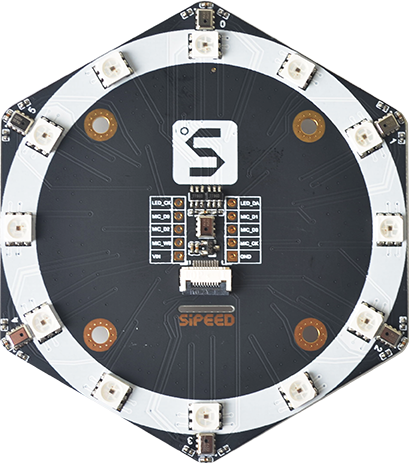
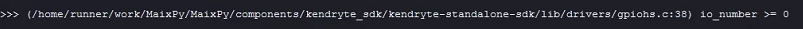

中文
中文MicArray 麦克风阵列
产品介绍
麦克风阵列模块是 Sipeed 基于 MSM261S4030H0 数字麦克风芯片设计的，模块声音识别灵敏度、信噪比高，由沿板的六个麦克风和一个中心的麦克风组成，阵列板上的 12 颗 LED 可以用来可视化识别声源方位，基于 GCC-PHAT 算法实现声源定位、语音识别、波束成形等需求场合。
购买链接：
相关参数资料
数据手册
点我下载 MSM261S4030H0 数据手册
点我下载 SK9822 数据手册
硬件资料
点我前往硬件资料合集
点我下载产品规格书
点我下载产品原理图
点我下载点位图
相关参数
| 功能特点 | 参数 |
|---|---|
| 声压级 | 140 dB SPL |
| 灵敏度 | -26(dB,dBFS @1kHz 1Pa) |
| 信噪比 | 57 dB (20kHz bandwidth,A-weighted) THD<1% (100dB SPL @1kHz S=Nom,Rload>2k ) |
| 时钟频率 | 1.0-4.0Mhz(正常模式) 150-800khz(低功耗模式) |
| MEMS 麦克风 | 7 个 MSM261S4030H0 组成阵列 |
| 连接器 | 支持 2*5P 2.54mm 端子和 10P 0.5mm FPC 连接器 |
| 灯光 | 12 个 SK9822 LED 组成一个环形 LED 阵列 |
| 多个 LED 通过双信号线级联 / 8 Bit（256 级）可调颜色 / 5 Bit（32 级）亮度调节 | |
| 尺寸 | 78.1*88.8mm |
使用方法
在进行上手使用麦克风阵列前，我们需要先完成一些准备工作。
准备工作
- 烧录固件
前往 下载站 下载固件，下载 固件说明 里面的默认固件即可使用。
- 掌握 K210 系列开发板的基础使用（使用开发板为前提）
前往 K210 上手（避坑）指南 学习相关基础使用，下一步操作开始默认会运行代码会使用开发板。
模块引脚定义
因麦克风阵列需与开发板进行搭配才能使用，连接方式有两种（2.54mm 杜邦线及 10P 0.5mm FPC 排线）
如适配板卡上无 FPC 排线接口需使用杜邦线进行连接，需使用下列引脚的定义信息。
| 引脚序号 | 引脚名称 | 类型 | 引脚说明 |
|---|---|---|---|
| 1 | VIN | VCC | 模块电源输入正 |
| 2 | GND | GND | 模块电源地 |
| 3 | MIC_D0 | I/O | 0 号麦克风和1号麦克风的 I²S 接口的串行数据输出 |
| 4 | MIC_D1 | I/O | 2 号麦克风和3号麦克风的 I²S 接口的串行数据输出 |
| 5 | MIC_D2 | I/O | 4 号麦克风和5号麦克风的 I²S 接口的串行数据输出 |
| 6 | MIC_D3 | I/O | 中心麦克风的 I²S 接口的串行数据输出 |
| 7 | MIC_WS | I/O | I²S 接口的串行数据字选择 |
| 8 | MIC_CK | I/O | I²S 接口的串行数据时钟 |
| 9 | LED_CK | I/O | LED 的串行数据时钟 |
| 10 | LED_DA | I/O | LED 的的串行数据输出 |
接线参考
文档以杜邦线接法为示例，接线前参照自己所用板卡原理图，确定自己选择的引脚没有被其他外设使用。
（比如不应该与 LCD 引脚或者摄像头的引脚等外设引脚复用）
| 麦克风阵列 | 开发板上的对应管脚 | 代码中所对应的参数 |
|---|---|---|
| VIN | 3.3v/5v | —— |
| GND | GND | —— |
| LED_CK | I/O 口 | sk9822_clk |
| LED_DA | I/O 口 | sk9822_dat |
| MIC_D0 | I/O 口 | i2s_d0 |
| MIC_D1 | I/O 口 | i2s_d1 |
| MIC_D2 | I/O 口 | i2s_d2 |
| MIC_D3 | I/O 口 | i2s_d3 |
| MIC_WS | I/O 口 | i2s_ws |
| MIC_CK | I/O 口 | i2s_sclk |
注意：因为 K210 的 FPIOA 的特性, 支持每个外设随意映射到任意引脚；所以将上面的表格中的 I/O 口 与（自行使用）开发板上带有数字标识的引脚连起来即可，类似于标有 GND 这种特殊标识（参考板子原理图）的就不算所谓的数字标识引脚，连接完后可以查看（例程代码下方）关于代码中引脚的说明。
Micropython 代码
以下是声源定位实现的代码，运行即可在开发板上体验声源定位的效果。
from Maix import MIC_ARRAY as mic
import lcd
lcd.init()
mic.init()#默认配置
#mic.init(i2s_d0=23, i2s_d1=22, i2s_d2=21, i2s_d3=20, i2s_ws=19, i2s_sclk=18, sk9822_dat=24, sk9822_clk=25)#可自定义配置 IO
while True:
imga = mic.get_map() # 获取声音源分布图像
b = mic.get_dir(imga) # 计算、获取声源方向
a = mic.set_led(b,(0,0,255))# 配置 RGB LED 颜色值
imgb = imga.resize(160,160)
imgc = imgb.to_rainbow(1) # 将图像转换为彩虹图像
a = lcd.display(imgc)
mic.deinit()
注意：请自行根据自己的连接的引脚号，对应着修改 mic.init(i2s_d0=23, i2s_d1=22, i2s_d2=21, i2s_d3=20, i2s_ws=19, i2s_sclk=18, sk9822_dat=24, sk9822_clk=25) 里面的参数（示例：将麦克风阵列上的 MIC_D0 与 K210 板子上标号为 25 的引脚相连，那么代码中的相关参数需要修改为 i2s_d0=25）其他引脚同理修改，因用户自行配置的不同无固定杜邦线连接说明，个人自行修改引脚参数，并且不要忘记删掉 mic.init(...) 前面的注释（删掉#就行）。
C 语言代码
SK9822 驱动代码
仅供参考用，来源：github ;需要分析代码的话建议复制代码到电脑本地编辑器中查看。
sipeed_sk9822.c
#include "sipeed_sk9822.h"
define LED_NUM 12
define SK9822_DAT_SET() \
{ \
gpiohs->output_val.bits.b27 = 1; \
}
define SK9822_DAT_CLR() \
{ \
gpiohs->output_val.bits.b27 = 0; \
}
define SK9822_CLK_SET() \
{ \
gpiohs->output_val.bits.b28 = 1; \
}
define SK9822_CLK_CLR() \
{ \
gpiohs->output_val.bits.b28 = 0; \
}
static void sk9822_init(void)
{
gpiohs_set_drive_mode(SK9822_DAT_GPIONUM, GPIO_DM_OUTPUT);
gpiohs_set_drive_mode(SK9822_CLK_GPIONUM, GPIO_DM_OUTPUT);
gpiohs_set_pin(SK9822_DAT_GPIONUM, 0);
gpiohs_set_pin(SK9822_CLK_GPIONUM, 0);
}
void sk9822_send_data(uint32_t data)
{
for (uint32_t mask = 0x80000000; mask > 0; mask >>= 1)
{
SK9822_CLK_CLR();
asm volatile("nop");
asm volatile("nop");
asm volatile("nop");
asm volatile("nop");
asm volatile("nop");
asm volatile("nop");
asm volatile("nop");
asm volatile("nop");
asm volatile("nop");
asm volatile("nop");
asm volatile("nop");
asm volatile("nop");
asm volatile("nop");
asm volatile("nop");
asm volatile("nop");
asm volatile("nop");
asm volatile("nop");
asm volatile("nop");
asm volatile("nop");
asm volatile("nop");
asm volatile("nop");
asm volatile("nop");
asm volatile("nop");
asm volatile("nop");
// usleep(1);
if (data & mask)
{
SK9822_DAT_SET();
}
else
{
SK9822_DAT_CLR();
}
SK9822_CLK_SET();
asm volatile("nop");
asm volatile("nop");
asm volatile("nop");
asm volatile("nop");
asm volatile("nop");
asm volatile("nop");
asm volatile("nop");
asm volatile("nop");
asm volatile("nop");
asm volatile("nop");
asm volatile("nop");
asm volatile("nop");
asm volatile("nop");
asm volatile("nop");
asm volatile("nop");
asm volatile("nop");
asm volatile("nop");
asm volatile("nop");
asm volatile("nop");
asm volatile("nop");
asm volatile("nop");
asm volatile("nop");
asm volatile("nop");
asm volatile("nop");
asm volatile("nop");
asm volatile("nop");
asm volatile("nop");
asm volatile("nop");
asm volatile("nop");
asm volatile("nop");
asm volatile("nop");
asm volatile("nop");
// usleep(2);
}
}
//32bit 0
void sk9822_start_frame(void)
{
sk9822_send_data(0);
}
//32bit 1
void sk9822_stop_frame(void)
{
sk9822_send_data(0xffffffff);
}
//1 1 1 1 gray | b | g | r
void sk9822_data_one_led(uint8_t gray, uint8_t r, uint8_t g, uint8_t b)
{
uint32_t tosend;
gray &= 0x1f; //for make sure no error data in
tosend = ((0xe0 | gray) << 24) | (b << 16) | (g << 8) | r;
sk9822_send_data(tosend);
}
uint32_t sk9822_gen_data_one_led(uint8_t gray, uint8_t r, uint8_t g, uint8_t b)
{
uint32_t tosend;
gray &= 0x1f; //for make sure no error data in
tosend = ((0xe0 | gray) << 24) | (b << 16) | (g << 8) | r;
return tosend;
}
//first color1, then msleep interval, then color2, last msleep interval
void sk9822_flash(uint32_t color1, uint32_t color2, uint32_t interval)
{
uint8_t index;
color1 |= 0xe0000000;
color2 |= 0xe0000000;
sk9822_start_frame();
for (index = 0; index < LED_NUM; index++)
{
sk9822_send_data(color1);
}
sk9822_stop_frame();
msleep(interval);
sk9822_start_frame();
for (index = 0; index < LED_NUM; index++)
{
sk9822_send_data(color2);
}
sk9822_stop_frame();
msleep(interval);
}
static void arraymove(uint32_t array[], uint8_t len)
{
uint8_t index;
uint32_t tmp;
tmp = array[0];
for (index = 0; index < len - 1; index++)
{
array[index] = array[index + 1];
}
array[len - 1] = tmp;
}
//呼吸
//跑马灯
//方位
void sk9822_horse_race(uint8_t r, uint8_t g, uint8_t b, uint32_t interval, uint8_t times)
{
uint32_t led_frame[LED_NUM] = {0};
uint8_t i, index;
for (index = 0; index < 12; index++)
{
led_frame[index] = 0xff000000;
}
for (index = 0; index < 6; index++)
{
// led_frame[index] = sk9822_gen_data_one_led((0xe0|(index*4)),r-40*index,g-30*index,b-20*index);
led_frame[index] = sk9822_gen_data_one_led((0xe0 | (32 - index * 4)), r, g, b);
}
for (index = 0; index < times; index++)
{
while (1)
{
sk9822_start_frame();
for (i = 0; i < 12; i++)
{
sk9822_send_data(led_frame[i]);
}
sk9822_stop_frame();
arraymove(led_frame, LED_NUM);
msleep(interval);
}
}
}
void sk9822_breath(uint8_t r, uint8_t g, uint8_t b, uint32_t interval)
{
uint8_t index, cnt, dir;
uint32_t color = sk9822_gen_data_one_led(0xff, r, g, b);
cnt = 0;
dir = 1;
while (1)
{
if (cnt >= 30)
{
dir = !dir;
cnt = 0;
}
cnt++;
color = sk9822_gen_data_one_led((0xe0 | (dir ? cnt : 31 - cnt)), r, g, b);
sk9822_start_frame();
for (index = 0; index < LED_NUM; index++)
{
sk9822_send_data(color);
}
sk9822_stop_frame();
msleep(interval);
}
}
void sipeed_init_mic_array_led(void)
{
sk9822_init();
//flash 3 times
sk9822_flash(0xffeec900, 0xffff0000, 200);
sk9822_flash(0xffeec900, 0xff00ff00, 200);
sk9822_flash(0xffeec900, 0xff0000ff, 200);
}
// void sipeed_calc_voice_strength(uint8_t voice_data[])
// {
// uint32_t tmp_sum[12] = {0};
// uint32_t led_color[12];
// uint8_t i, index, tmp;
// for (index = 0; index < 12; index++)
// {
// tmp_sum[index] = 0;
// for (i = 0; i < voice_strength_len[index]; i++)
// {
// tmp_sum[index] += voice_data[voice_strength[index][i]];
// }
// tmp = (uint8_t)tmp_sum[index] / voice_strength_len[index];
// led_brightness[index] = tmp > 15 ? 15 : tmp;
// }
// sk9822_start_frame();
// for (index = 0; index < 12; index++)
// {
// led_color[index] = (led_brightness[index] / 2) > 1 ? (((0xe0 | (led_brightness[index] * 2)) << 24) | 0xcd3333) : 0xe0000000;
// sk9822_send_data(led_color[index]);
// }
// sk9822_stop_frame();
// }
Micarray 代码
仅供参考用，来源：github；需要分析代码的话建议复制代码到电脑本地编辑器中查看。
更多拓展用法
这里收集了社区小伙伴们贡献的关于麦克风阵列更多的拓展用法，供大家进行参考实现。
如何获取数据格式
麦克风阵列与 K210 是通过 I2S 协议进行通信的，可通过麦克风的通信协议手册查询接收的数据格式。
如何获取声音的强度及角度
声源定位
常见问题
出现报错信息

更换其他IO管脚即可